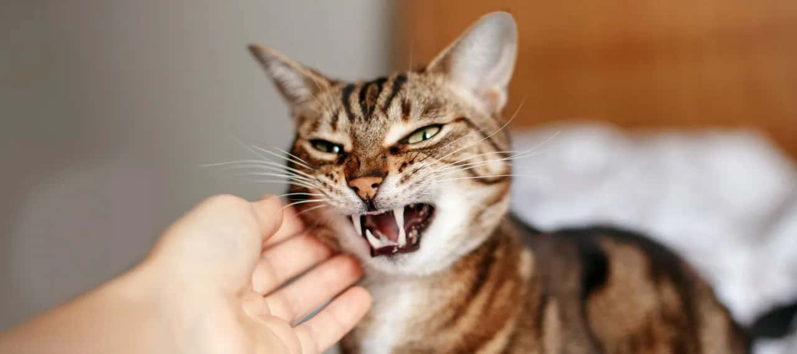
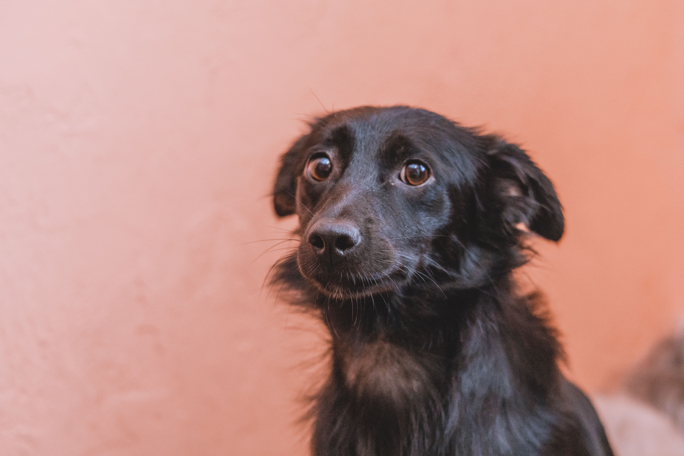
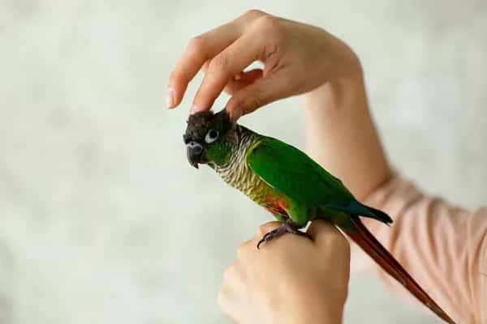
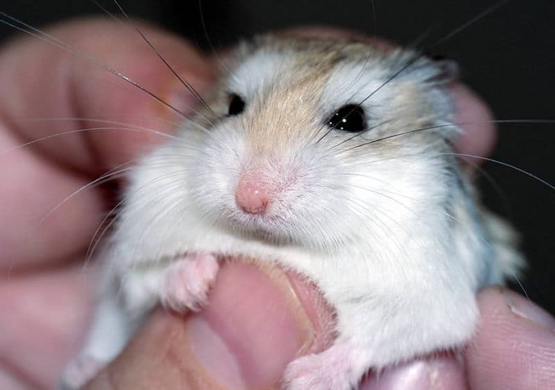
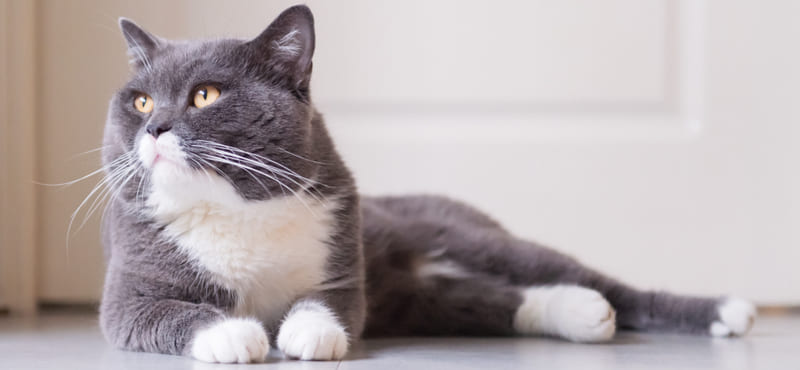

Статьи
Как распознать причину агрессии
Агрессия у кошек, как и любое другое нежелательное поведение, — это сигнал о том, что что-то не так...
ЧитатьВялость и снижения аппетита
Вялость и снижения аппетита — это основные признаки множества заболеваний животных. Ваш питомец может отказываться от любимой им пищи, избегать общения с вами. Это те симптомы, по которым мы можем судить о том, что животное что-то беспокоит....
ЧитатьУ попугая линька: что делать
В этой статье расскажу, почему попугай линяет, насколько это нормальный процесс, как ухаживать за питомцем в этот период и какие признаки должны вас насторожить...
ЧитатьБолезни хомяков — основные симптомы
Хомяки, пожалуй, одни из самых обаятельных домашних грызунов. В мире существует множество видов хомяков, однако, только некоторых держат как домашних любимцев. Но любящие хозяева часто и не подозревают, что болезни хомяков встречаются довольно часто.
ЧитатьМочекаменная болезнь у котов: симптомы и лечение
По некоторым данным, каждая пятая кошка подвержена риску развития мочекаменной болезни. Неприятный диагноз чаще ставится самцам. Мы расскажем о том, как не пропустить симптомы патологии, а также о лечении и мерах профилактики...
Читать